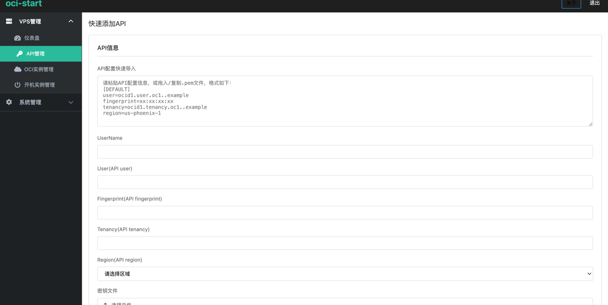
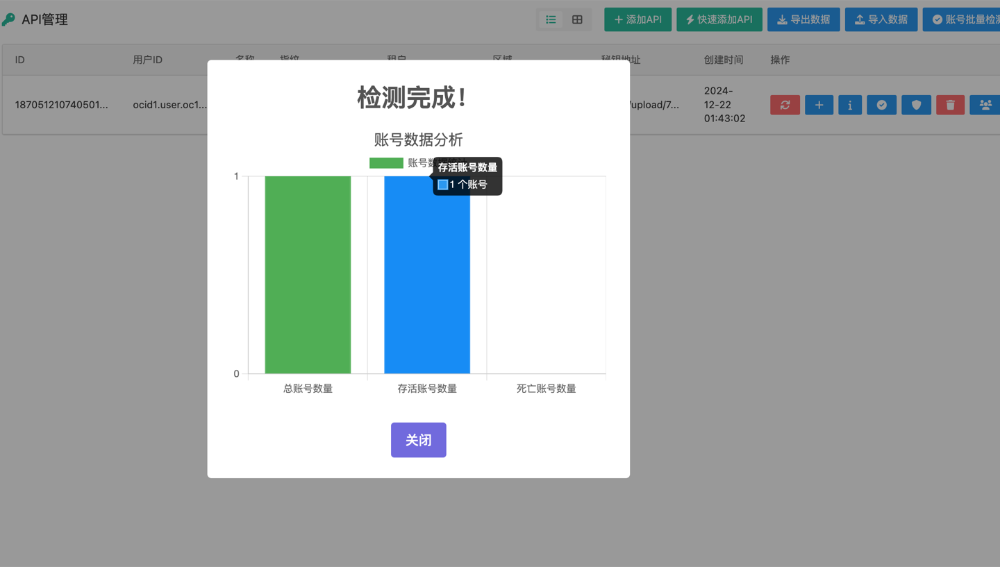
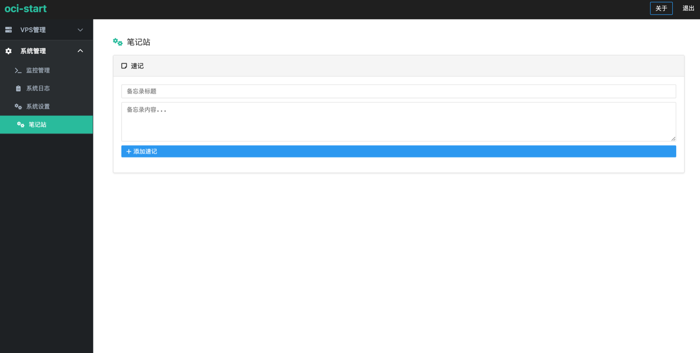

多租户 API 管理
粘贴配置即可导入多个 OCI 账号。批量测活，识别免费号与升级号，查看配额、账单和审计日志，订阅新区域。
多租户 API 管理、ARM / AMD 并发开机、换 IP、Web SSH 与 VNC 控制台。部署在你自己的服务器上，私钥不会离开本机。
wget -O oci-start.sh https://raw.githubusercontent.com/doubleDimple/shell-tools/master/oci-start.sh && chmod +x oci-start.sh && ./oci-start.sh start
不用反复登录官方控制台，也不用拼凑各种脚本。常用的 OCI 操作都可以在一个面板里完成。
粘贴配置即可导入多个 OCI 账号。批量测活，识别免费号与升级号，查看配额、账单和审计日志，订阅新区域。
内置 A1.Flex、E2.1.Micro 等规格模板。多个 API 同时开机，可设置重试间隔和每日时段，成功后推送通知。
启动、停止、终止、同步和改名。在线调整 CPU 与内存，扩容引导卷并修改 VPU，一键 DD 重装系统。
一键更换公网 IPv4，可指定目标网段。添加 IPv6、附属 VNIC，可视化管理安全列表规则。
浏览器内的 SSH 终端，支持 SFTP 上传下载。实例失联时可直接打开 OCI 控制台连接进行救援。
接入 Cloudflare 与腾讯云 EdgeOne。换 IP 后可直接在面板里更新域名解析记录。
按月统计出入站流量，超过阈值可自动关机。一键安装探针，查看电信、联通、移动三网延迟与丢包。
支持 Telegram、Bark、钉钉和飞书。开机结果、每日账号巡检和费用检查都可以推送。
API 私钥保存在本机 H2 数据库，不上传任何远端。登录支持 TOTP 二次验证、OAuth、Turnstile 和异常 IP 封禁。
以下截图来自项目 README，界面会随版本持续更新。






支持脚本和 Docker 两种方式，任选其一。
一台 Linux 服务器，推荐 Debian 或 Ubuntu。脚本方式需要 Java 8 及以上版本。
sudo apt update && sudo apt install default-jdk复制右侧命令到服务器执行。新版本会自动检测并安装 Redis，如本机已有 Redis 请先评估端口冲突。
浏览器访问下面的地址，使用配置的用户名和密码登录。
http://your-ip:9856mkdir -p oci-start && cd oci-start
wget -O oci-start.sh https://raw.githubusercontent.com/doubleDimple/shell-tools/master/oci-start.sh
chmod +x oci-start.sh
./oci-start.sh start./oci-start.sh stop # 停止
./oci-start.sh restart # 重启
./oci-start.sh status # 查看状态
./oci-start.sh update # 升级
./oci-start.sh uninstall # 卸载mkdir -p oci-start-docker && cd oci-start-docker
wget -O docker.sh https://raw.githubusercontent.com/doubleDimple/shell-tools/master/docker.sh
chmod +x docker.sh
./docker.sh install./docker.sh uninstall # 卸载
docker ps -a # 查看容器状态
docker logs -f oci-start # 实时查看日志使用 Nginx 或宝塔反向代理、需要 VNC 控制台转发时，请参考 README 中的配置说明
按面板菜单分组，列出已经实现的功能。
OCI-Start 由社区共同维护。欢迎提交 Issue、Pull Request，或者点一个 Star。
不收费。项目基于 Apache-2.0 协议开源，可以自由部署和修改。
面板部署在你自己的服务器上，私钥保存在本机 H2 数据库，不会上传到任何远端。Telegram 机器人只用来推送通知，不接触账号数据。
推荐 Debian 或 Ubuntu。脚本部署需要 Java 8 及以上版本，也可以选择 Docker 部署。
脚本部署执行 ./oci-start.sh update 即可。面板的“关于”页面也会提示新版本。
默认端口为 9856，可在配置文件的 server.port 中修改。使用 Nginx 或宝塔反代时需要设置可信代理，具体请看 README 的配置章节。
核心功能围绕 Oracle Cloud。此外支持导入 GCP 服务账号查看和管理实例，以及纳管任意厂商的 VPS 进行监控。